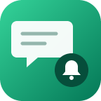

Google Chat Notifications: Alerts & Reports for Jira
Send Jira issue updates and scheduled JQL reports to Google Chat spaces.
Overview
Keep a team up to date where it already talks. Add an incoming webhook to a Google Chat space and choose what reaches it: new issues, status or assignee changes, comments or other field changes, per project, field and JQL. Schedule daily or weekly reports of any JQL query.
- Several destinations, each one a Google Chat space with a name you choose.
- Rules by project, kind of change, field and JQL filter, each one sending to a destination.
- Messages as cards (the issue, what changed, who changed it and an Open in Jira button) or as compact text. Comment text is optional.
- Updates of the same issue go to one thread in the space (you can turn this off per destination).
- Daily or weekly reports with the issues of a JQL query and a link to the full search.
- Webhook links are stored encrypted and never shown again. Only Jira administrators can change the setup.
Getting started
- A Jira administrator installs the app from its Atlassian Marketplace listing.
- In Google Chat, open the space that should receive the notifications. Next to the space name, open the menu and select Apps & integrations → Add webhooks. Give the webhook a name (for example "Jira") and select Save.
- In the list of webhooks, open the webhook's menu and select Copy link.
- In Jira, open Settings → Apps → Google Chat notifications. In the Destinations tab, select Add destination, give it a name, paste the link and select Save destination. Then select Send test: a message arrives in the space.
- In the Rules tab, select Add rule. Reports are set up in the Reports tab.
Destinations
| Setting | What it does |
|---|---|
| Name | How the destination appears in rules and reports. |
| Webhook URL | The link of the space's incoming webhook. It starts with https://chat.googleapis.com/v1/spaces/. It is stored encrypted and never shown again; when you edit a destination, leave it empty to keep the current one. |
| Message style | Card: a card with the issue, the changes and an Open in Jira button. Compact text: one or two lines with the issue key as a link. |
| Keep all updates of an issue in one thread | Updates of the same issue are sent as replies in one thread of the space. |
The Status column shows OK, or Last send failed with the time and Google Chat's answer. The next message that gets through clears it.
Rules
| Setting | What it does |
|---|---|
| Projects | The projects the rule applies to. Empty means all projects. |
| Send a message when | Issue created, status changed, assignee changed, comment added, other fields changed. |
| Only when these fields change | Optional, for "Other fields changed": a comma-separated list of field names or IDs, for example priority, Fix versions, labels. Other field changes are ignored. |
| Only issues matching this JQL | Optional filter, for example priority in (High, Highest) or issuetype = Bug. It is checked when the change happens. |
| Destination | The space where the message goes. |
| Include the comment text | When a comment is added, the first 300 characters are included. Only public comments: the text of comments restricted to a role or group, and of internal notes in Jira Service Management, is never sent; the message only says that a comment was added. |
If several rules send the same change to the same destination, the space receives one message.
Reports
A report sends the issues of a JQL query to a destination every day or every week at the time you choose, in the time zone of the administrator who saved it. It lists up to 50 issues and links to the full search. Send now sends it at once.
Moving from Google Chat for Jira Cloud
Google Chat for Jira Cloud is built on Atlassian Connect, and Atlassian ends support for Connect apps on 31 January 2027. Its last version was released in November 2021.
The configuration of the other app is not copied. Set this app up in a few minutes (see Getting started):
- In each space that received Jira notifications, add an incoming webhook (Apps & integrations → Add webhooks) and copy its link.
- In this app, add each space as a destination and select Send test.
- Recreate the notifications as rules. A filter by issue type becomes a JQL filter such as
issuetype = Bug; a filter by field becomes Only when these fields change. - When the new messages arrive, remove the Jira app from those spaces in Google Chat and uninstall the old app from Jira, so that the space does not get every update twice.
This app sends notifications and reports. It does not show previews of Jira links pasted in Google Chat and does not create issues from Google Chat.
Limitations
- Incoming webhooks need a Google Workspace Business or Enterprise account, and your Google Workspace administrator must allow users to add and use incoming webhooks.
- Messages go one way, from Jira to Google Chat: no link previews, no commands and no issue creation from Google Chat. Messages go to spaces, not to personal chats.
- Google Chat accepts one message per second per space, shared by all the webhooks of that space. During bulk changes, some updates may not be delivered: the app retries once, and the Status column shows the error.
- Everyone in a space sees its messages, including people who cannot open the project in Jira. Choose spaces and JQL filters with that in mind.
- The app reads issues as itself, so a rule can notify about issues in any project the app can see.
- Comment text is sent only for public comments. For restricted comments and Jira Service Management internal notes, the space only learns that a comment was added.
- Very long reports are shortened to fit Google Chat's limit of 32,000 bytes per message, with "…and N more" and a link to the full search.
- In compact text, the characters
<and>of issue text are shown as‹and›, so that issue text cannot create links or @mentions in the space.
Permissions
| Scope | Why |
|---|---|
storage:app | Store the destinations, the rules and reports, and the webhook links (encrypted). |
read:jira-work | Read the changed issue, check the JQL of a rule and search the issues of a report. |
read:jira-user | Show the name of the person who made the change. |
chat.googleapis.com | The only external service: Google Chat incoming webhooks, to send the messages. |
Data and privacy
The app stores the webhook links (encrypted), the destinations (name, Google Chat space ID, message style, thread option and the last delivery error) and the rules and reports (projects, kinds of change, fields and JQL) in Atlassian's Forge storage. It stores no Atlassian account IDs. When a rule or report matches, it sends to Google Chat the issue key, summary, issue type, status, the names of the people involved and, if you choose, the text of public comments (never restricted comments or internal notes). Those messages are then kept by Google in your spaces under your Google Workspace terms. See the privacy policy.
Troubleshooting
"That is not a Google Chat webhook URL"
Copy the whole link from the webhook's menu in the space (Copy link). It starts with https://chat.googleapis.com/v1/spaces/ and includes key= and token=.
Send test fails
- 403 or 404: the webhook was deleted from the space, the space no longer exists, or your Google Workspace does not allow incoming webhooks. Create a new webhook, then edit the destination and paste the new link.
- 429: the space received too many messages in a short time. Try again in a moment.
Messages stopped arriving
Open the Destinations tab: the Status column shows the last error Google Chat returned. Check that the rule is on, that its projects, fields and JQL match the issue, and select Send test.
The app says it needs an active license
Check the app subscription in Administration → Apps → Manage apps. Without an active license the app does not send messages.
Need help?
See the support page.